FACULDADE DE INFORMÁTICA E ADMINISTRAÇÃO PAULISTA
ENGENHARIA DE SOFTWARE
Gilson Dias Ramos Junior RM552345
Isabelle Toricelli da Silva RM552806
Jeferson Gabriel de Mendonça RM553149
Global Solution - CitizenTech
Caminho Livre: Relatório de Secure DevOps Tools & Cloud Computing
Repositório: github.com/CaminhoLivreGS/caminho-livre
Aplicação: app-caminholivre-prod-00e44e.azurewebsites.net
Vídeo de demonstração: https://youtu.be/DiCNZ2wbM_M
Turma: 4ESPA
São Paulo
2026
Este relatório descreve a nuvem e o pipeline de CI/CD do Caminho Livre, um aplicativo colaborativo de acessibilidade urbana. O cidadão fotografa um problema na calçada, e um módulo de visão computacional no próprio celular confirma a evidência e borra rostos e placas antes de qualquer envio. O módulo de visão é detalhado na Documentação Técnica de Visão Computacional, entregue em separado.
Todo o código, os workflows e a infraestrutura estão no repositório público. Os links de execuções do GitHub Actions citados na seção 11 permitem conferir cada evidência.
| Item | Descrição |
|---|---|
| Nome do produto | Caminho Livre |
| Cidadão | Pedestres com deficiência (visual, física, cadeirantes) e com mobilidade reduzida (idosos, gestantes, pessoas com carrinho de bebê), que dependem de calçadas transitáveis. |
| Problema | Buracos, calçadas quebradas, degraus, piso tátil interrompido, obstáculos e alagamentos impedem a circulação. As denúncias chegam ao poder público sem evidência confiável, duplicadas ou com fotos que expõem pessoas e placas de veículos. |
| Proposta de valor | Denunciar um problema em 4 passos (Foto, Tipo, Resultado, Enviado), com interface acessível (WCAG 2.1, teclado e leitor de tela). A visão computacional confirma a evidência e anonimiza a foto no próprio aparelho, gerando denúncias verificadas e em conformidade com a LGPD. |
| Arquitetura | SPA (Vite + JavaScript) com OpenCV.js em Web Worker, servida por nginx non-root em container. Azure App Service (Web App for Containers), Container Registry e Key Vault, provisionados por Terraform, com pipeline DevSecOps no GitHub Actions e observabilidade no Azure Monitor e em Prometheus/Grafana. |
| Fontes de dados | Fotos enviadas pelo cidadão (processadas só no aparelho). Calibração e testes com 101 fotos de licença livre do Wikimedia Commons, sem pessoas identificáveis. Estrutura pronta para um dataset brasileiro de treino/teste. |
| Modelos de IA | Visão computacional clássica: Canny, morfologia, limiarização HSV, componentes conexos, Hough e hash perceptual (dHash). Única IA treinada: Haar Cascades do OpenCV 4.9.0 (rosto frontal, perfil e placa), usada só para anonimização. Placas brasileiras detectadas por agrupamento de caracteres. |
| URL | https://app-caminholivre-prod-00e44e.azurewebsites.net (no ar durante a avaliação; fora dela, desligada para poupar créditos e religada pelo GitHub Actions em cerca de 15 minutos). |
| Indicadores de impacto | Medidos hoje: acurácia de 65,7% (Acessibilidade), 89,7% (Obstáculo) e 87,0% (Alagamento); 18 de 21 placas brasileiras borradas; 0 fotos reais rejeitadas indevidamente. Metas para o piloto: denúncias validadas por mês; % confirmadas automaticamente; tempo médio até o encaminhamento à prefeitura; 100% das fotos enviadas anonimizadas; disponibilidade ≥ 99% e latência p95 < 2 s. |
| ODS | ODS 10, Redução das desigualdades (meta 10.2: inclusão de pessoas com deficiência). ODS 11, Cidades e comunidades sustentáveis (meta 11.2: mobilidade acessível; meta 11.7: espaços públicos seguros, inclusivos e acessíveis). |
Ficha técnica do MVP.
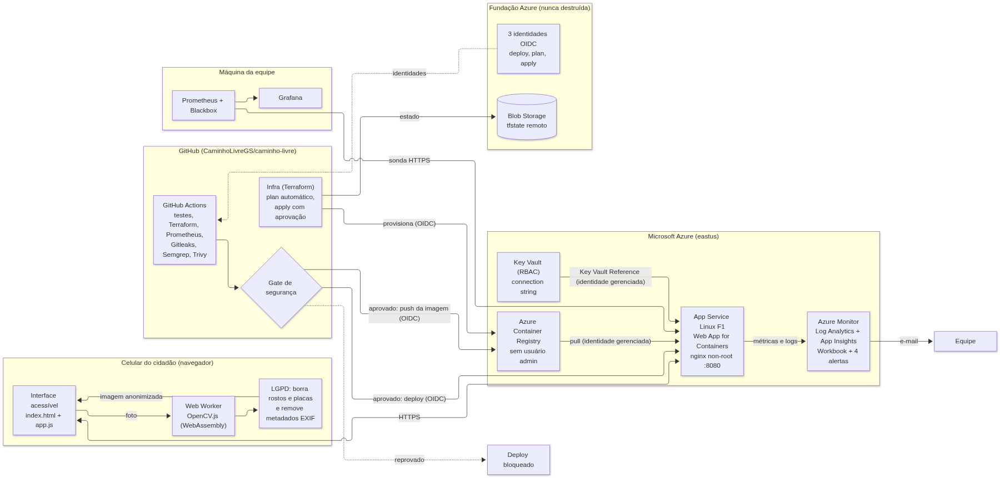
Arquitetura do Caminho Livre (fonte Mermaid em docs/entrega/arquitetura.mmd e no README).
main, a mesma imagem analisada pelo Trivy vai para o Azure Container Registry com a tag do commit, e o Web App é atualizado. O login no Azure é feito por OIDC, sem senha guardada.plan automático e apply/destroy manuais, com aprovação de um revisor.| Componente | Tecnologia | Função |
|---|---|---|
| Aplicação | Vite, JavaScript, OpenCV.js 4.9 (WebAssembly) | Interface acessível e visão computacional no Web Worker |
| Container | nginx-unprivileged 1.30 (Alpine 3.24), nginx atualizado para 1.30.7 no build, UID 101 | Servir os arquivos estáticos com headers de segurança |
| Hospedagem | Azure App Service Linux F1 (Web App for Containers) | Executar o container com HTTPS e health check |
| Registro | Azure Container Registry Basic | Imagens versionadas pelo SHA do commit |
| Segredos | Azure Key Vault (RBAC) | Configuração sensível, lida por Key Vault Reference |
| Observabilidade | Azure Monitor, Log Analytics, App Insights; Prometheus, Blackbox, Grafana | Métricas de Ouro, alertas e painéis |
| IaC | Terraform 1.17 + azurerm 5.13, estado no Blob Storage | Provisionamento reproduzível |
| CI/CD | GitHub Actions, Gitleaks 8.30, Semgrep 1.166, Trivy 0.71 | Testes, segurança, deploy e infraestrutura |
Componentes da solução.
nginx-unprivileged com o bundle estático.ARG/ENV; o .dockerignore exclui .env, *.tfvars e *.tfstate.apk upgrade no build; o nginx é atualizado pelo repositório oficial nginx.org, com a chave de assinatura verificada por SHA-512; os módulos dinâmicos não usados (geoip, image-filter, njs, xslt) são removidos. Resultado: 0 CVEs HIGH/CRITICAL no Trivy.unsafe-inline, HSTS, X-Frame-Options: DENY, Permissions-Policy limitando a câmera à própria origem.O docker compose up --build -d sobe o app; com --profile observability, sobe também Prometheus, Blackbox, nginx-exporter e Grafana. Portas publicadas só em 127.0.0.1, sistema de arquivos read-only, cap_drop: ALL, no-new-privileges e limites de CPU e memória. A senha do Grafana é um Docker secret, fora do git.
| Recurso | Configuração de segurança |
|---|---|
| Container Registry (Basic) | Sem usuário admin e sem pull anônimo; acesso só por RBAC |
| App Service Plan F1 + Web App | HTTPS obrigatório, TLS 1.2+, FTP e WebDeploy com senha desligados, health check em /healthz, pull do ACR pela identidade gerenciada (AcrPull) |
| Key Vault | Autorização só por RBAC (seção 6) |
| Log Analytics + App Insights | Retenção de 30 dias, teto de 0,1 GB/dia, IP mascarado |
| Alertas e Workbook | 4 alertas de métrica com e-mail (seção 5) |
| Budget da assinatura | US$ 10/mês, alertas em 50%, 80% e 100% do gasto real e 100% do previsto |
Recursos provisionados pelo Terraform e controles aplicados.
tfstate e .tfvars fora do repositório: o estado fica num Azure Blob Storage com autenticação só por Entra ID (chaves desligadas), versionamento e soft delete de 14 dias. backend.hcl, terraform.tfvars e *.tfstate estão no .gitignore; no CI, as variáveis vêm de GitHub Secrets e Variables.0.0.0.0/0: o App Service só expõe 80/443 (HTTP redireciona para HTTPS). O site de administração (SCM/Kudu, por onde passa o SSH) é negado para todos por padrão; com a infra no ar, ele respondeu HTTP 403 a acessos pela internet. A variável admin_cidrs libera IPs específicos, e sua validação rejeita qualquer faixa maior que /16, incluindo 0.0.0.0/0.O tfstate e as 3 identidades do GitHub ficam num resource group que nunca é destruído (infra/bootstrap/fundacao.sh). Se ficassem no Terraform principal, o destroy apagaria a identidade que o CI usa para recriar a infra.
| Identidade | Environment | Permissões |
|---|---|---|
| deploy | production (só a main) | AcrPush/Reader no ACR e Website Contributor no Web App |
| plan | infra-plan | Reader na assinatura + papel customizado só de leitura (sites/config/list e workspaces/sharedKeys, que o Reader não inclui), leitura do tfstate e Key Vault Secrets User |
| apply | infra (só a main + aprovação) | Contributor + administração de RBAC limitada por condição ABAC aos 6 papéis que o Terraform atribui; não consegue conceder Owner nem Contributor |
Identidades do GitHub Actions (OIDC) e suas permissões.
As credenciais federadas OIDC usam os IDs imutáveis do repositório (repo:CaminhoLivreGS@355958631/caminho-livre@1456200921:environment:...), então um repositório recriado com o mesmo nome não herda o acesso. Locks CanNotDelete (resource group) e ReadOnly (identidades) impedem que a identidade de apply apague o tfstate ou adicione credenciais federadas para outro repositório. Contributor não remove locks; um teste até com Owner retornou ScopeLocked.
Dois workflows no GitHub Actions: main.yml (CI/CD DevSecOps), em todo push, PR para a main e manualmente; e infra.yml (Infra Terraform), com plan automático e apply/destroy manuais.
| Job | O que faz | Bloqueia quando |
|---|---|---|
| Testes e build | 23 testes unitários do núcleo de visão + build de produção | Algum teste falha |
| Terraform | fmt -check e validate | Formatação ou sintaxe inválida |
| Observabilidade | promtool check e testes unitários das regras de alerta | Config ou regra inválida |
| Gitleaks | Segredos em todo o histórico git | Qualquer segredo encontrado |
| Semgrep | SAST: JavaScript, React, segredos, Dockerfile, nginx e Terraform | Risco ALTO ou CRÍTICO (matriz OWASP: probabilidade × impacto) |
| Trivy | CVEs da imagem, segredos na imagem, misconfigurações de Dockerfile e Terraform, usuário non-root | CVE HIGH/CRITICAL com correção, ou misconfiguração HIGH/CRITICAL |
| Gate de segurança | Consolida os resultados | Qualquer job anterior falhou |
| Deploy (Azure) | Localiza ACR e Web App pela tag, envia a imagem aprovada, atualiza o Web App e faz smoke test | Só na main, com o gate aprovado |
Terraform (infra.yml) | plan automático com a identidade de leitura; apply/destroy manuais, e o apply dispara o deploy | Erro no plano; apply/destroy exigem aprovação no environment infra |
Jobs do pipeline e critérios de bloqueio.
AZURE_TENANT_ID, AZURE_SUBSCRIPTION_ID e ALERT_EMAIL no repositório; AZURE_CLIENT_ID em cada environment (uma identidade por função). São identificadores: o login é OIDC, sem senha de longa duração.permissions mínimas por job.main protegida: exige PR, o check "Gate de segurança" e conversas resolvidas; force push e exclusão bloqueados, também para admins..trivyignore, .gitleaksignore e comentários nosemgrep).O PR #3 introduziu de propósito: uma connection string falsa do Azure Storage (Gitleaks), XSS e segredo JWT fixo (Semgrep, 2 achados ALTO) e a imagem base antiga sem apk upgrade (Trivy). Os três scanners reprovaram, o gate mostrou "DEPLOY BLOQUEADO", o deploy não rodou e a proteção da main impediu o merge. O PR foi fechado sem merge (evidências na seção 11).
As 4 Métricas de Ouro (Google SRE) são monitoradas em duas camadas.
| Sinal | Azure Monitor (métrica do Web App) | Prometheus local |
|---|---|---|
| Latência | HttpResponseTime e p50/p95/p99 dos logs HTTP | probe_duration_seconds (com fases DNS/TCP/TLS/servidor) |
| Tráfego | Requests | nginx_http_requests_total |
| Erros | Http5xx, Http4xx, HealthCheckStatus | probe_success, probe_http_status_code |
| Saturação | CpuTime (indicada para o F1) e MemoryWorkingSet | nginx_connections_active |
Métricas de Ouro e onde cada uma é medida.
| Alerta (Azure Monitor, e-mail) | Condição | Severidade |
|---|---|---|
| Erros 5xx | Mais de 5 respostas 5xx em 5 minutos | 1 |
| Latência | Tempo médio de resposta acima de 2 s em 5 minutos | 2 |
| Saturação de CPU | Mais de 60 s de CPU em 15 minutos | 2 |
| Disponibilidade | Health check abaixo de 100% em 5 minutos | 1 |
Regras de alerta do Azure Monitor.
Um Workbook "Caminho Livre - Métricas de Ouro" reúne os painéis no portal. Localmente, o Blackbox Exporter sonda a URL do Azure e o container; o Grafana já vem configurado com o dashboard, e 7 regras de alerta (indisponibilidade, 5xx, latência, saturação, pico de tráfego, certificado TLS expirando e coletor fora do ar) têm testes unitários no CI.
Como a visão computacional roda no celular do cidadão, a CPU do container serve só arquivos estáticos. Por isso, os alertas principais são de erros e latência, e o de CPU protege a cota de 60 minutos de CPU por dia do plano F1.
Evidência: o alerta de disponibilidade (Sev1) disparou no Azure enquanto o app respondia 503, antes do primeiro deploy, e se resolveu sozinho depois. Localmente, uma queda simulada disparou AplicacaoIndisponivel em 2 minutos.
Estratégia principal: não ter segredos de longa duração. O deploy usa OIDC (sem client secret), o Web App puxa imagens do ACR com identidade gerenciada (o ACR não tem usuário admin) e a aplicação é estática. Ainda assim, um Key Vault foi criado para guardar a configuração sensível que existe hoje e servir ao backend futuro.
Key Vault Secrets User para o Web App e para o plan, Key Vault Secrets Officer só para a identidade de apply.APPLICATIONINSIGHTS_CONNECTION_STRING guarda só o endereço do segredo (@Microsoft.KeyVault(SecretUri=...)); o App Service resolve o valor com a identidade gerenciada. Status verificado: Resolved.value_wo): o recurso do segredo não guarda o valor no tfstate. A mesma connection string ainda aparece no estado como atributo do próprio Application Insights, por isso o tfstate é protegido (só Entra ID, sem chaves, acesso por RBAC).Preços de tabela em USD, região eastus, consultados na API oficial de preços do Azure (prices.azure.com/api/retail/prices) em 13/11/2026. A assinatura Azure for Students só permite as regiões eastus, southcentralus, canadacentral, mexicocentral e southafricanorth.
| Recurso | SKU | Preço unitário | Custo/mês (MVP) |
|---|---|---|---|
| App Service Plan Linux | F1 (Free) | US$ 0 | US$ 0,00 |
| Container Registry | Basic (10 GB inclusos) | US$ 0,1666/dia | US$ 5,00 |
| Key Vault | Standard | Sem mensalidade; US$ 0,03 a cada 10 mil operações | ≈ US$ 0,00 |
| Log Analytics | Pay-as-you-go | 5 GB/mês grátis; depois US$ 2,30/GB | US$ 0,00 |
| Application Insights + Workbook | Baseado em workspace | Incluso no Log Analytics | US$ 0,00 |
| Alertas de métrica (4) | — | 10 primeiros grátis; depois US$ 0,10/mês | US$ 0,00 |
| Action group (e-mail) | — | 1.000 e-mails/mês grátis | US$ 0,00 |
| Storage do tfstate | Standard LRS | Poucos KB | < US$ 0,01 |
| Identidades, RBAC, locks, budget | — | Sem custo | US$ 0,00 |
| Total | ≈ US$ 5,00 (≈ US$ 0,17/dia) | ||
Estimativa de custo mensal do MVP.
Cenário de produção (referência): App Service B1 (US$ 0,017/h ≈ US$ 12,41/mês), que adiciona Always On, sem cold start e com SLA, totalizando ≈ US$ 17,40/mês. Com B1, também passaria a ser viável a VNet Integration para fechar o firewall do Key Vault.
destroy) e religada sob demanda (apply). A fundação permanece por menos de US$ 0,01/mês.O Azure App Service é um serviço PaaS: a Microsoft opera a plataforma, e a equipe responde pelo que roda nela e por como ela é configurada.
| Camada | Microsoft | Equipe | Como a equipe cumpre |
|---|---|---|---|
| Datacenter, hardware e rede física | ✔ | ||
| SO do host e virtualização | ✔ | ||
| Runtime do App Service, balanceador, patches da plataforma | ✔ | ||
Certificado TLS de *.azurewebsites.net | ✔ | ||
| Imagem do container | ✔ | Trivy bloqueia CVEs HIGH/CRITICAL; apk upgrade e nginx atualizado no build | |
| Código da aplicação | ✔ | Semgrep, testes unitários, revisão por PR | |
| Segredos e credenciais | Fornece o Key Vault | ✔ | Sem segredos de longa duração (OIDC, identidade gerenciada); Key Vault por RBAC; Gitleaks; GitHub Secrets |
| Identidade e acesso | Fornece Entra ID e RBAC | ✔ configura | Menor privilégio por função; ABAC no apply; locks contra escalada |
| Rede e exposição | Fornece os controles | ✔ configura | HTTPS, TLS 1.2, SCM/SSH negado, sem 0.0.0.0/0 |
| Dados e privacidade | Protege a infraestrutura | ✔ | Anonimização no aparelho, IP mascarado, retenção limitada |
| Monitoramento e resposta | Fornece o Azure Monitor | ✔ configura | Métricas de Ouro, 4 alertas, budget |
| Estado da infraestrutura | Durabilidade do Blob Storage | ✔ | tfstate remoto, sem chaves, versionado, fora do git |
Divisão de responsabilidades no modelo PaaS.
Em IaaS (máquinas virtuais), o patch do sistema operacional, o firewall do host e o SSH passariam à equipe; por isso o PaaS foi escolhido para o MVP.
Princípios aplicados (art. 6º): finalidade, necessidade (minimização), segurança e prevenção.
connect-src 'self' impede o envio de dados a outros domínios.brazilsouth; a infraestrutura fica em eastus. Como as fotos não vão para a nuvem, só logs operacionais ficam fora do Brasil, sob as cláusulas contratuais de proteção de dados da Microsoft (art. 33). Em produção, recomenda-se brazilsouth.Próximos passos para o backend: autenticação do cidadão, limite de envios, deduplicação pelo hash perceptual, fila de moderação para casos inconclusivos, criptografia em repouso das imagens anonimizadas (chaves no Key Vault), política de retenção e canal para os direitos do titular (art. 18).
Achados dos scanners que não se aplicam ao MVP ou que dependem de recursos pagos. Cada um está registrado no código (.trivyignore, .gitleaksignore ou comentário nosemgrep), com justificativa e revisão prevista.
| Achado | Justificativa | Controle compensatório / revisão |
|---|---|---|
| AZU-0003: App Service sem autenticação | App cidadão público; o conteúdo estático não deve exigir login | Autenticação exigida no backend de denúncias |
| AZU-0001: sem certificado de cliente | mTLS é para máquina-a-máquina; cidadãos usam navegador comum | HTTPS obrigatório |
| AZU-0013 (CRITICAL): firewall do Key Vault aberto | O Web App só alcança um cofre com firewall por VNet Integration, indisponível no F1; os runners do GitHub não têm IP fixo | RBAC, papéis com escopo no cofre, segredo write-only, TLS. Revisar ao migrar para B1 |
AZU-0016 / Semgrep keyvault-purge-enabled | A infra é destruída e recriada entre avaliações; com purge protection, o nome ficaria bloqueado por até 90 dias | Soft delete de 7 dias. Em produção, ligar |
Gitleaks generic-api-key (commit e68c20f) | Falso positivo: hash SHA-512 da chave pública de assinatura do nginx, copiado do Dockerfile oficial | Ignorado só esse achado, por impressão digital |
Riscos aceitos, justificativas e controles compensatórios.
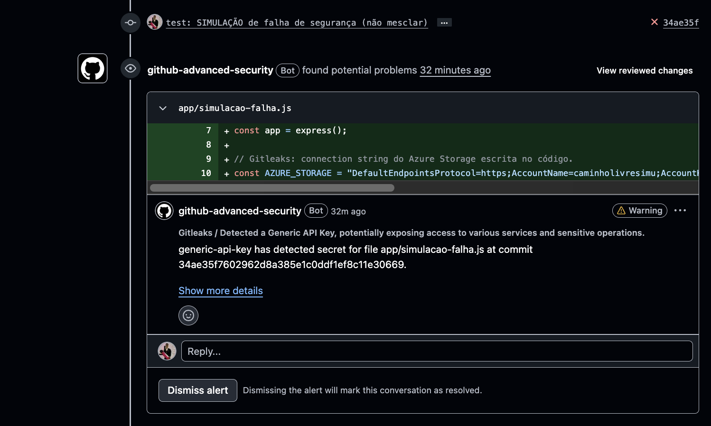
Gitleaks detecta a connection string (falsa) do Azure Storage no código.
Semgrep aponta XSS: raw-html-format (ALTO, bloqueia) e direct-response-write (MÉDIO, só registrado).
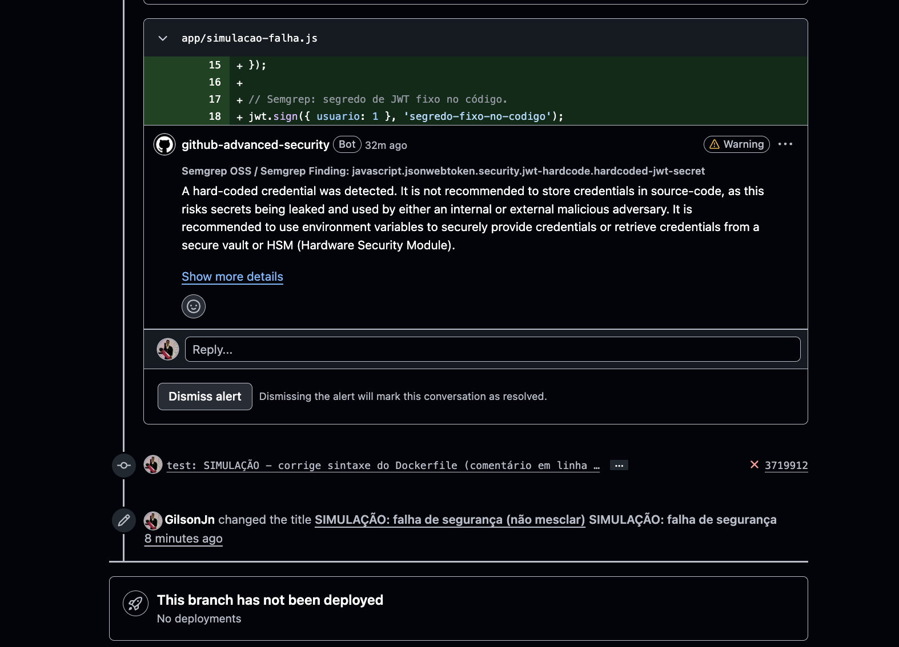
Semgrep aponta segredo de JWT fixo (ALTO); o PR termina com "This branch has not been deployed".
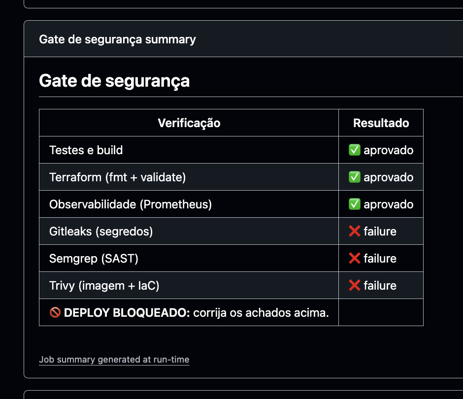
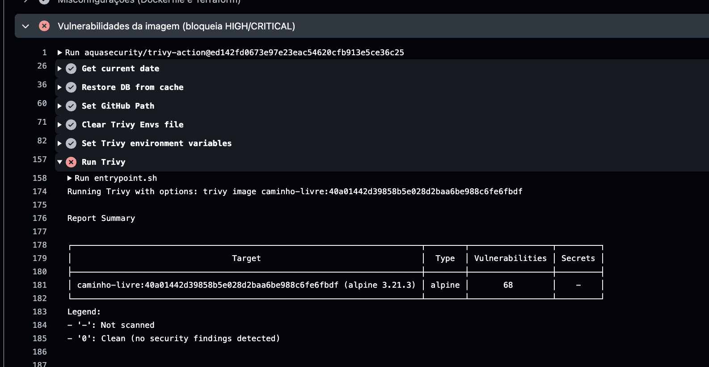
À esquerda, o gate de segurança mostra DEPLOY BLOQUEADO; à direita, o Trivy encontra 68 vulnerabilidades (65 HIGH, 3 CRITICAL) na imagem com Alpine 3.21.3.
O bloqueio também funcionou fora da simulação: já com o projeto pronto, o Trivy reprovou um PR porque o nginx 1.30.6 da imagem base passou a ter 6 CVEs (3 CRITICAL, 3 HIGH). O Dockerfile passou a atualizar o nginx para a 1.30.7 pelo repositório oficial, e o PR só foi mesclado depois disso.
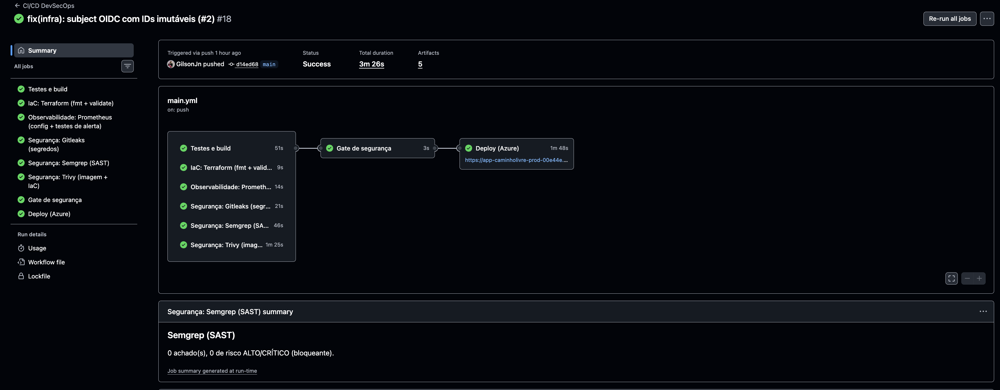
Run aprovado: 6 verificações em paralelo, gate aprovado e deploy no Azure (OIDC, push no ACR, smoke test).

Aplicação no ar no Azure App Service.

Workflow Infra (Terraform): apply aprovado manualmente no environment infra, infraestrutura criada e deploy disparado.
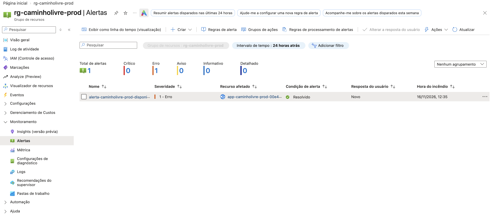
Azure Monitor: alerta de disponibilidade (Sev1) disparado e resolvido.
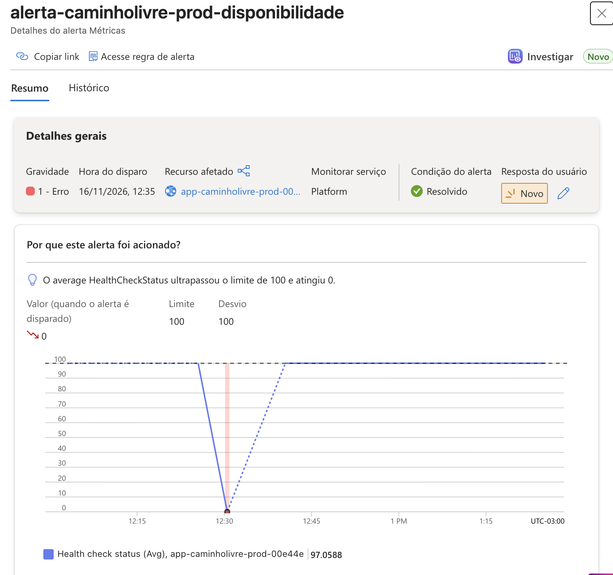
Detalhe do alerta: HealthCheckStatus caiu de 100 para 0 e voltou ao normal.

Grafana local: Métricas de Ouro durante a queda simulada (alerta AplicacaoIndisponivel em 2 minutos).
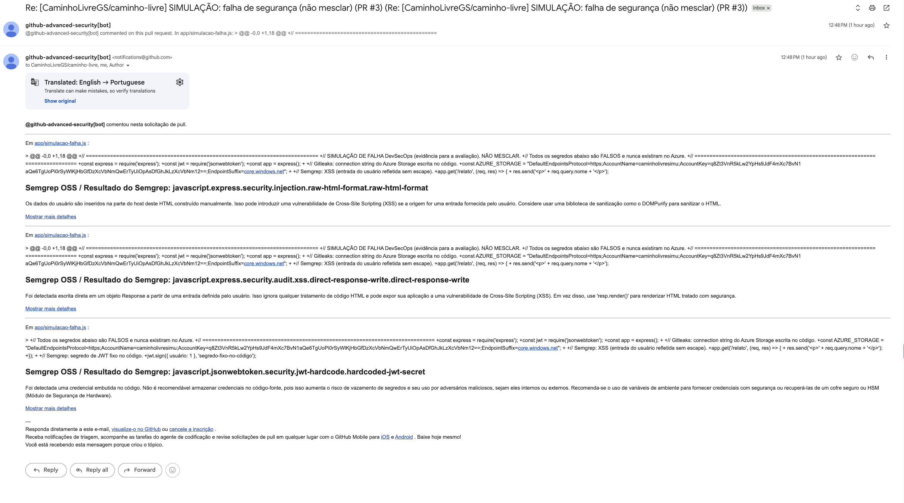
E-mail do GitHub Code Scanning com os achados do Semgrep no PR #3.
No primeiro commit da simulação (34ae35f), o Trivy falhou por um erro de sintaxe no Dockerfile, e não por CVEs; a execução válida é a do commit 3719912. As notificações das duas tentativas estão em docs/evidencias/.
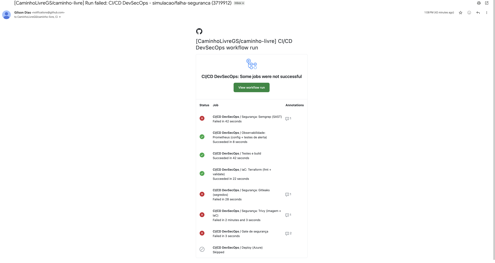
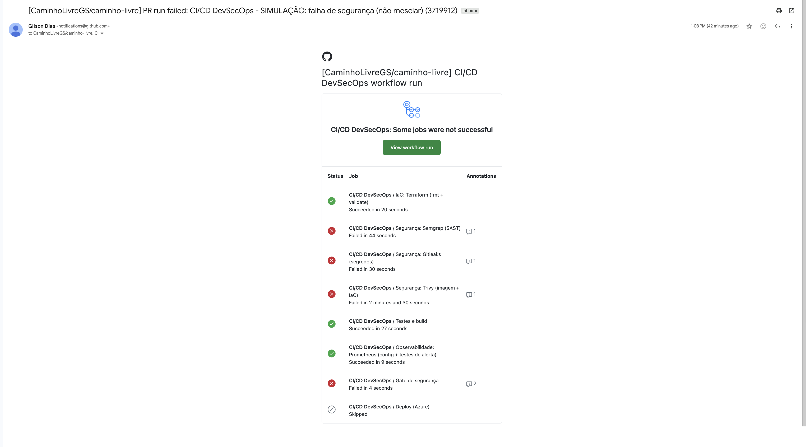
Notificações do run reprovado na simulação de falha.
az login sh infra/bootstrap/fundacao.sh # tfstate + identidades + locks EMAIL_ALERTA=voce@exemplo.com sh infra/scripts/configurar-github.sh # environments, secrets, variables
GitHub → Actions → Infra (Terraform) → Run workflow (branch main) → acao = apply ou destroy → aprovação no environment infra. O apply cria os 24 recursos e dispara o deploy da aplicação (cerca de 15 minutos).
docker compose up --build -d # app em http://127.0.0.1:8080 openssl rand -base64 24 > observability/grafana/admin-password docker compose --profile observability up --build -d # + Prometheus/Grafana npm install && npm run deps && npm test # testes unitários
| O quê | Onde |
|---|---|
| Repositório | github.com/CaminhoLivreGS/caminho-livre |
| Aplicação | app-caminholivre-prod-00e44e.azurewebsites.net |
| Vídeo de demonstração | https://youtu.be/DiCNZ2wbM_M |
| Documentação de visão computacional | docs/entrega/Caminho-Livre-Documentacao-Visao-Computacional.pdf |
| Simulação de falha (PR #3) | github.com/CaminhoLivreGS/caminho-livre/pull/3 |
| Run reprovado | actions/runs/43903627055 |
| Run com deploy | actions/runs/43898004965 |
| Apply aprovado | actions/runs/43956593526 |
Links do projeto e das evidências.